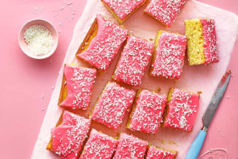
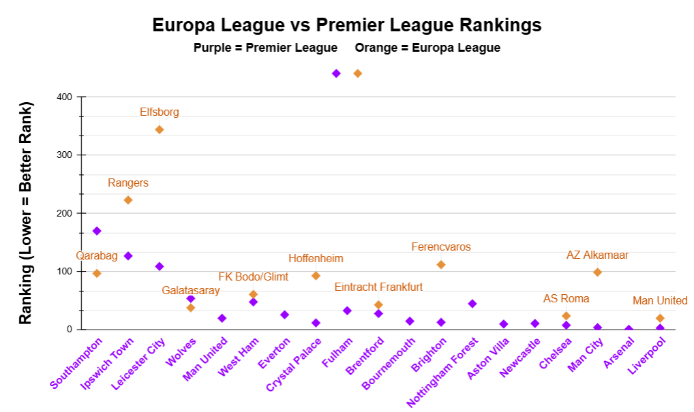
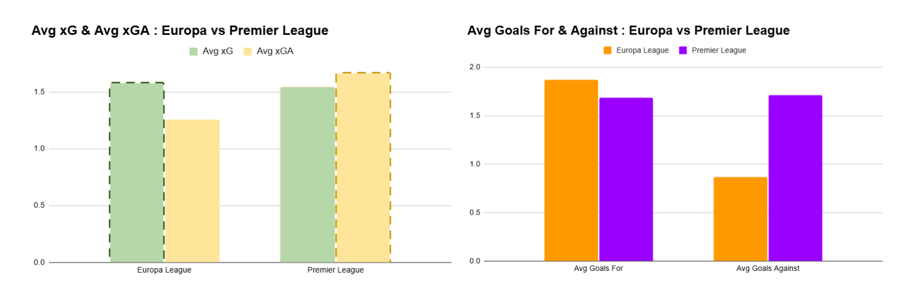

17th place & 1st trophy in 17 years: Tottenham's Rollercoaster of a Season
By London Lopez | January 09, 2026

In 1901, high flying first division side Sheffield United approached the FA Cup Final with strong spirits, having won the cup two years before in 1899, and facing a non-league opponent: Tottenham Hotspur. Against all odds, Tottenham wrestled their way back into the match, down one after the first half, with 52nd and 75th minute goals to equalize and gain the lead. To seal the deal, top-scorer Sandy Brown netted his 15th goal of the campaign, the first player to score in every round of the cup, solidifying a 3-1 victory to make Tottenham the first and only non-league side to win the FA Cup.
To celebrate this unprecedented accomplishment, the club handed out free slices of cake with bright pink icing with coconut flakes sprinkled on top, known as Tottenham cake due to locally harvested ingredients, to local children. Ever since, Tottenham cake has been associated with the club and served at the stadium for special occasions.
More than a century later, coconut flakes and pink icing were added to the North London club’s shopping list in celebration of their most recent title: the 2025 Europa League. This comes unexpectedly as Tottenham finished a disappointing 17th in the Premier League, just one spot above relegation, after losing an astonishing 25 matches across all competitions, their joint most ever in campaign (1991/2) and defying odds considering 22 Premier League defeats is the most suffered by a side without getting relegated. Additionally, no team finishing below 14th in their domestic league has won a major European trophy, allowing Spurs to hold the record as the lowest placed team to qualify for the Champions League through the Europa League.
After a 17 year long trophy drought since the 2008 League Cup, which has resulted in ‘trophyless’ being associated with the club, this trophy delivery by Ange Postecoglu is an achievement no other Spurs manager could reach for 41 years: a European title, their first European silverware since the 1984 UEFA Cup. This invites the question: What factors contributed to Tottenham Hotspur’s abnormal placing 17th, one spot away from relegation, as a renowned Big Six team in the Premier League and miraculously winning the Europa League, the second most prestigious European club competition, in the same season? How did variance in level of competition, player injuries, and prioritization of European competition success play into the reintroduction of European prestige and delectable Tottenham cake.
First and foremost, to understand Tottenham’s success in the Europa League as opposed to their evident struggles in the Premier League, let us evaluate the difference in the level of competition between Europa League and Premier League teams by comparing their Opta Analyst Power Rankings and examining Tottenham’s performance against each set of teams.
The Opta Analyst Power Rankings of the best football teams in the world are, as explained by Opta Analyst themselves, “a global team ranking system that assigns an ability score to over 10,000 men’s domestic football teams.” and are utilized in the scatterplot labeled, “Europa League vs Premier League Rankings,” to compare the teams Tottenham faced in the 2024-25 season. These teams are listed according to their ranking with the best, most competitive teams ranked higher (closer to #1 also known as the best team in the world).
Thus, it is undeniable that Premier League teams are simply on another level because every Premier League team (with the exception of the 3 relegated teams: Southampton, Leicester City, Ipswich Town) is ranked in the top 55 teams in the world with 10 of those teams, half of the league, in the top 20 worldwide. Conversely, Europa League teams barely scrape top 20 with a majority of teams ranking terribly low, select ones placing 61st, 93rd, 223rd and even 344th place in the world, establishing them as much lower quality opponents.
To illustrate this point even further, we can look at the bar graphs labeled “Goals Scored For/Against Tottenham: Europa vs Premier League”, and “Avg xG & Avg xGA of Tottenham: Europa vs Premier League,” which shows the Whites’ average expected goals in average xG and their average expected goals to concede in average xGA.
Through examination, it is evident that Tottenham performed exceedingly better in the Europa League, against the aforementioned lower level opponents, as they scored an average of 1.867 goals in the Europa League as opposed to only 1.684 goals in the Prem, and only conceded an average of 0.867 compared to a whooping 1.71 goal average conceded in the Prem. In addition, average xG and xGA tells a similar tale with Tottenham boasting an expected goals scored of 1.58 and a minimal 1.26 goals against in the Europa League while in the Premier League display troubles with a lower expected goals of 1.545 and higher expected goals against at 1.666.
Ultimately, it is fair to conclude that Tottenham’s Europa League opponents were not only significantly lower ranked, but that Spurs was expected to and performed much better in Europa League matches as opposed to games against tougher, higher ranked Premier League opponents.
Another cause of Spurs’ poor performance is the squad’s severe lack of availability. Player availability is vital for success of a team, especially in England’s top league, because it allows the manager to manage the minutes of his players whether that be by putting in star players for important rivalry matches and to win key points, resting said game-changers and rotating in youngsters or second-choice players, and overall having the ability to freely change lineups to align with tactics as needed. For example, title-winners Liverpool F.C. boasted an impressive fitness record with their entire 33 man squad only missing 765 days and having 11 of their integral outfield players making 30 or more league appearances to secure the club’s 20th Premier League title.
However, injuries destroy this success by disrupting team chemistry, especially when impactful leaders like center midfielders and goal scorers get hurt, which prevents athletes from sufficient rest, and lessens the manager’s ability to rotate his team which eliminates the benefits listed above. Through inspection of Tottenham’s squad availability in the injury impact on game/day availability charts provided above, it is clear they endured significant challenges, having faced 41 injuries and players being ruled out for an astounding total of 1,553 days. To make matters worse, impactful players as explained above were among those injured with key playmaker James Maddison going down with long term issues, star center back Micky van de Ven suffering a serious hamstring tear, and starting eleven regulars Rodrigo Bentancur, Kulusevski, Richarlison, and Captain Son Heung-min hindered by injuries through the season.
Fundamentally, Spurs was drastically impacted because their squad lacked sufficient depth to cope with the high volume of injuries, leading to a meager 11 games won out of 38 and a narrow dodge of relegation.
In January 2025 when the Transfer Window closed, Spurs manager Ange Postecoglu boldly declared he would focus all attention on winning the Europa League, in essence ignoring and willingly sacrificing the Premier League season for a chance of European glory that was just in reach. This was evidenced by Ange’s protection of center back duo Cristian Romero and Micky van de Ven wherein, upon return from injury, they were rested during league games, ruining their Premier League success with a degraded defensive line. Moreover, when defensive leader Van de Ven recovered from his second hamstring problem of the season, he started just nine games in 2025, seven of those in the Europa League, further demonstrating Postecoglu’s dedication to European glory.

This trend continues in the bar graph above which compares player usage by % of minutes played in the Premier League versus Europa League. Here we can see the % of minutes of Tottenham’s 15 most utilized players and a majority, with 9 out of 15, playing a higher percentage of minutes in the Europa League as opposed to the Premier League. As previously mentioned, vital defensive specialists Cristian Romero and Micky van de Ven along with other defensive workhorses Pedro Porro, Yves Bissouma, and Ben Davies played a much higher percentage of minutes in the Europa League as shown visually with the orange Europa League bars towering over the purple Premier League ones.
In the end, it is evident that Tottenham Hotspur’s rollercoaster of a season occurred as a result of three primary factors: a stark difference in level of competition with lower quality and easily defeated Europa League teams and highly competitive and nearly impossible to beat Premier League opponents, numerous player injuries which impacted squad consistency and rotation, and a commitment to winning silverware by the end of the season, with the best chance in Europe, leading to a prioritization of European glory over domestic honor. With this, the North London boys in white hope this marks the beginning of an trophy winning era, contrary to their ‘trophyless’ past, or at the very least, or a sign they can prevent their cross town rivals Arsenal from getting their hands on silverware and remain the bottlers they are.